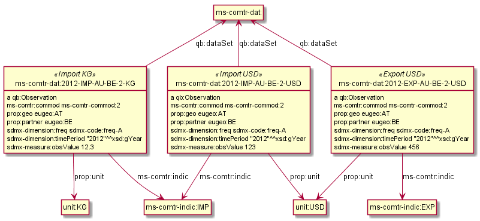
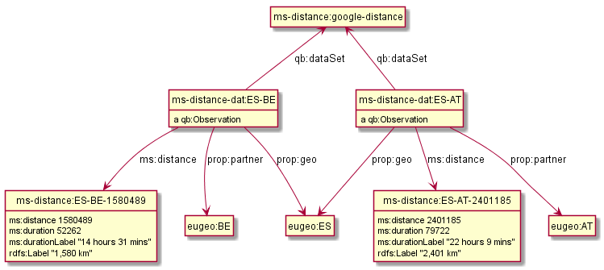
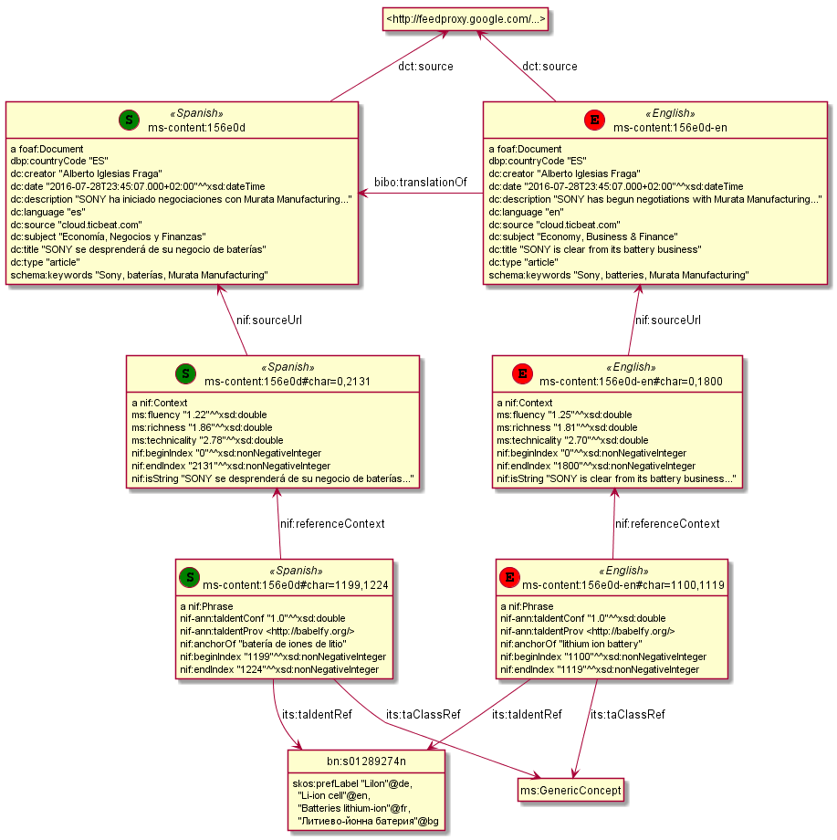

Multisensor Linked Open Data
Table of Contents
FP7 Multisensor
Partners:
| CERTH (GR) | coordinator, image/video annot |
| UPF (ES) | NLP, FrameNet summarization, |
| Barcelona Media (ES) | annotation |
| LinguaTec (DE) | NER, translation |
| EVERIS (ES) | system integration |
| Ontotext (BG) | semantics, storage, reasoning |
| Deutsche Welle Innovation (DE) | UC1 Journalism |
| pressrelations (DE) | UC2 Press Monitoring |
| PIMEC (ES) | UC3 Decision Support |
Goals:
- content distillation of heterogeneous multimedia and multilingual data;
- sentiment and context analysis of content and social interactions;
- semantic integration of heterogeneous multimedia and multilingual data;
- semantic reasoning and intelligent decision support;
- multilingual and multimodal summarization and presentation of the information to the user.
Scope
Analyze and extract data from mass- and social media documents, including text, images and video, across several languages.
Uses a number of ontologies for representing that data:
- NIF and OLIA for linguistic info,
- ITSRDF and NERD for NER,
- DBpedia and Babelnet for entities and concepts,
- MARL for sentiment,
- OA for image, video, cross-article annotations
- FrameNet for lexical frames (embedded in NIF)
Linguistic Linked Data, Multisensor presentation, 2014-11, Bonn
- Still working on an "RDF Application Profile" for Multisensor, part of
D5.4 "Final semantic infrastructure and decision support system"
Linguistic Linked Data
Text Annotation
Lexical Resources
Corpora
Semantic Annotation
Opinion/Sentiment Analysis
Working Groups:
OLWG
OntoLex
LD4LT
BPMLOD
Projects:
MultilingualWeb
LIDER
FALCON
Multisensor
FREME
XML schemas:
GRaF
ITS2
LAF
LMF
UBY
Linguistic Ontologies:
FISE
ITS2
MARL
NERD
NIF
NLP2RDF
OLIA
OntoLing
OntoTag
Penn
Stanford
FrameNet
Lexical Ontologies/thesauri:
LEMON
LIME
OntoLex
GOLD
ISOcat
NERD
Lexical resources:
BabelNet
FrameNet
LemonUBY
OmegaNet
VerbNet
Wiktionary2RDF
WordNetRDF
Corpora:
Multitext
MASC
Text Annotation (Article and ASR Transcript)

Media Annotation: Image, Fusion to Text Annotation

Media Annotation: Video Frame

Social Media: Influence

Decision Support: Trade
UN ComTrade data on commercial trade volumes

Decision Support: Distance
Google data on distances and travel time (between capitals)

FrameNet Annotation

Real FN Data (Part 1)

Real FN Data (Part 2)

Data Quality
W3C Data Quality Vocabulary dqv:, Linked Data Quality Dimensions ldqd:
ms:accuracy a dqv:Metric; skos:prefLabel "Accuracy"@en; skos:definition "Degree to which SIMMO data correctly represents real world facts."@en; dqv:inDimension ldqd:semanticAccuracy; dqv:expectedDataType ms:Accuracy. ms:Accuracy a owl:Class, skos:ConceptScheme; rdfs:label "Accuracy values"@en. ms:accuracy-low a ms:Accuracy, skos:Concept; skos:inScheme ms:Accuracy; skos:prefLabel "Low accuracy"@en. ms:accuracy-medium a ms:Accuracy, skos:Concept; skos:inScheme ms:Accuracy; skos:prefLabel "Medium accuracy"@en. ms:accuracy-high a ms:Accuracy, skos:Concept; skos:inScheme ms:Accuracy; skos:prefLabel "High accuracy"@en. ms:accuracy-curated a ms:Accuracy, skos:Concept; skos:inScheme ms:Accuracy; skos:prefLabel "Manually curated"@en; skos:note "Highest accuracy"@en.
QualityAnnotation (Right) vs QualityMeasurement (Wrong)

RDFUnit Validation

Content Alignment

Content Translation

rdfpuml
All diagrams made with rdfpuml from actual Turtle
- "Making True RDF Diagrams with rdfpuml", Ontotext presentation (2016-05)
- "rdfpuml for True RDF Diagrams and R2RML Generation", SWIB 2016 (2016-11), upcoming
Eg this last diagram was made from Turtle, with these extra triples:
bibo:translationOf puml:arrow puml:left. dct:source puml:arrow puml:up. nif:sourceUrl puml:arrow puml:up. nif:referenceContext puml:arrow puml:up. <http://babelfy.org/> a puml:Inline. ms-content:156e0d puml:stereotype "<<(S,green)Spanish>>". <156e0d#char=1199,1224> puml:stereotype "<<(S,green)Spanish>>". <156e0d#char=0,2131> puml:stereotype "<<(S,green)Spanish>>". ms-content:156e0d-en puml:stereotype "<<(E,red)English>>". <156e0d-en#char=0,1800> puml:stereotype "<<(E,red)English>>". <156e0d-en#char=1100,1119> puml:stereotype "<<(E,red)English>>".